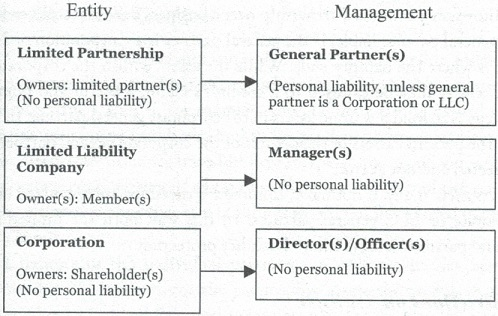

A Limited Partnership is similar to a General Partnership with the exception that it has two types of partners. The first type is a general partner who is responsible for managing the partnership. As with a General Partnership, the general partner of a Limited Partnership has broad powers to obligate the partnership and is also personally liable for the business’s debts and claims. If there is more than one general partner involved, they are all jointly and severally liable, meaning that a creditor can go after just one partner (or both partners) for the entire debt. (But as discussed below under Limited Liability, general partners can be protected in a Limited Partnership.) The second type of partner in a Limited Partnership is a limited partner. By definition, a limited partner is limited to his or her contribution of capital to the partnership and may not become actively involved in the business of the partnership. In the event a limited partner does become active in management, he or she may become personally responsible as a general partner.
The beauty of the limited, partnership structure is that with as little as 2% ownership, the general partner can exert complete control over the affairs of the limited partnership. This is an excellent way to handle properties with family members or investors involved. As limited partners they can be prevented from asserting demands or control over the investment. If your kids are a challenge and want you to sell the 4 plex so that they can hit the road with the band you, as general partner, can say no. As general partner, you are in control. The kids can own 50% or 70% or 90% of the limited partnership interests and as long as you are the general partner that 4 plex will not be sold. Absent fraud, the general partner reigns supreme.
The problem with properly structuring a limited partnership is that it requires the formation and maintenance of not one but two entities. To do it right you need not only a limited partnership but a corporation or LLC to serve as the general partner. (Remember, if you serve as the general partner in your individual capacity, you are personally responsible for everything).
To understand the management structure of a Limited Partnership, as well as an LLC and a Corporation, the following chart may be useful:

To organize a Limited Partnership, you must file a Certificate of Limited Partnership, otherwise known as an LP-1, with the Secretary of State’s office. This document contains certain information about the general partner and, depending on the state, limited partners, and is akin to the filing of Articles of Incorporation for a Corporation or Articles of Organization for an LLC.
The Limited Partnership offers certain unique advantages not always found in other entities. These features include:
Limited partners (limiteds) are not responsible for the partnership debts beyond the amount of their capital contribution or contribution obligation. So, as discussed, unless they become actively involved, the limiteds are protected.
As a rule, general partners are personally liable for all partnership debts. However, as was alluded to above, there is a way to protect the general partner of a Limited Partnership.
To reduce liability exposure, Corporations or LLCs are formed to serve as general partners of the Limited Partnership. In this way, the liability of the general partner, is encapsulated in a limited liability entity. Assume a creditor sues a Limited Partnership over a business debt and seeks to hold the general partner liable If the general partner is a Corporation or LLC that is where the liability ends. While the assets within the corporate or LLC entity may be exposed to a creditor’s claim a useful and popular strategy is to hold few or no assets in the corporate general partner. In this way the personal assets of the owners of the corporate general partner are protected and not at risk.
As such, many, if not most, Limited Partnerships are organized using corporate or LLC general partners. In this way, both the limited and general partners achieve limited liability protection.
By definition, limiteds may not participate in management, therefore the general partner maintains complete control. In many cases, the general partner will hold only two percent of the partnership interest but will be able to assert 100 percent control over the partnership. This feature is valuable in estate planning situations where a parent is gifting or has gifted Limited Partnership interests to his children.
The ability to restrict the transfer of Limited or General Partnership interests to outside persons is a valuable feature of the Limited Partnership. Do you want to keep unknown parties or undesirable ex-spouses out of your company? Through a written Limited Partnership Agreement, rights of first refusal, prohibited transfers and conditions to permitted transfers are instituted to restrict the free transferability of partnership interests. It should be noted that LLCs can also afford beneficial restrictions on transfer. These restrictions are crucial for achieving the creditor protection and estate and gift tax advantages afforded by Limited Partnerships.
Creditors of a partnership can only reach the partnership assets and—the assets of the general partner, which is limited by using a corporate general partner. Thus if, for example, you and your family owned three separate apartment buildings, it may be prudent to compartmentalize these assets into three separate Limited Partnerships, using one separate corporate general partner. If a litigious tenant sued over conditions at one of the properties, the other two buildings would not be exposed to satisfy any claims.
Creditors of the individual partners can only reach that person’s partnership interest and not the partnership assets themselves. Assume you’ve gifted a Limited Partnership interest equal to 25 percent in one of the apartment building partnerships to your son. He is young and forgets to obtain automobile insurance. Of course, in this example he gets in a car accident and has a judgment creditor looking for assets. This creditor cannot reach the apartment building asset itself because it is in the Limited Partnership. He can only reach the money earned by your son’s 25 percent Limited Partnership interest, and then only, in many states, through the charging order procedure. Charging orders, which do not offer an easy path to payment, are discussed more fully in Chapter Seven, and are not favored by creditors.
With proper planning, transfers of family assets from one generation to the next can occur at discounted rates. As a general rule, the IRS, at the time of this writing, allows one individual to give another individual a gift of $15,000 per year. Any gifts valued at over $15,000 are subject to a gift tax, but may also be counted as a lifetime gift, which allows $11.2 million (at least through 2025) in gifts during your life and at death. As such, you have two tracks of gifting: the annual (currently $15,000 per year) and the lifetime (currently $11.2 million per spouse). In the estate-planning arena, senior family members may be advised to give assets away during their lifetimes so that estate taxes of up to 40 percent are minimized. Please note that Congress is always prone to change these rules so stay current with your advisors.
The Limited Partnership provides a great deal of flexibility. A written Limited Partnership Agreement can be drafted to tailor the business and family planning requirements of any situation. And there are very few statutory requirements that cannot be changed or eliminated through a well-drafted Limited Partnership Agreement.
Limited Partnerships, like General Partnerships, are flow-through tax entities. The Limited Partnership files an informational partnership tax return (IRS Form 1065, United States Partnership Return of Income, the same as a General Partnership) and each limited receives an IRS Schedule K-1 (1065), Partner’s Share of Income, Credits and Deductions, from the Limited Partnership. Each limited then files the K-1 with his or her individual IRS 1040 tax return.